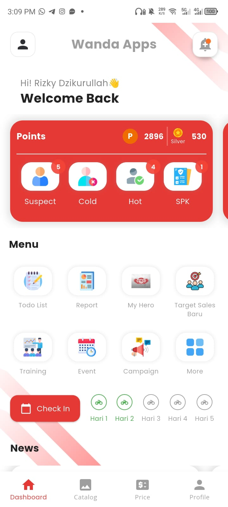
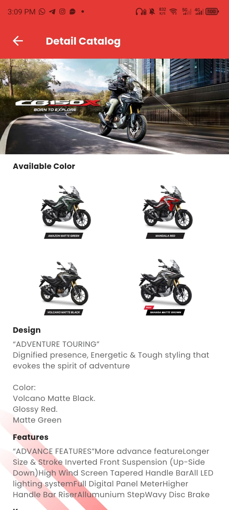
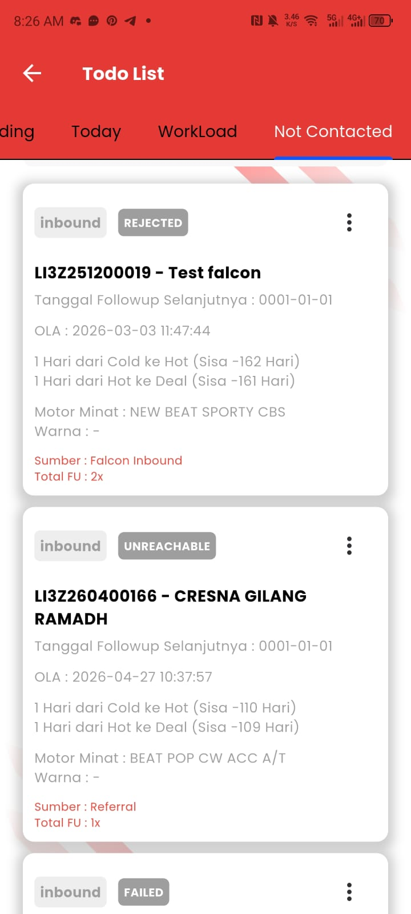
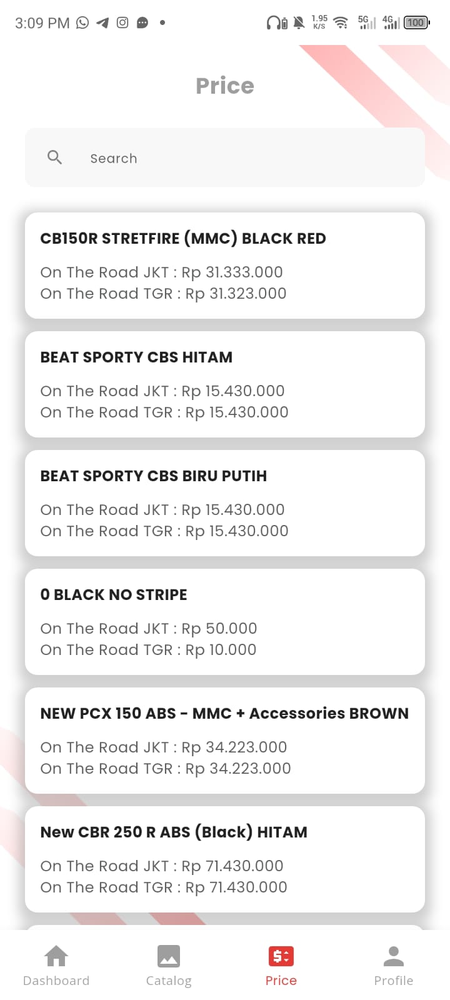

WANDA FLP MOBILE — PT WAHANA MAKMUR SEJATI
Aplikasi mobile enterprise sales force suite resmi Front Line People (FLP) Main Dealer Honda (PT Wahana Makmur Sejati & PT CDC Global Informatika). Mengakselerasi penjualan unit motor secara digital melalui CRM prospek terpadu, e-catalog interaktif, simulasi perhitungan harga On The Road (OTR) resmi Jakarta & Tangerang, dan gamifikasi sistem reward poin kinerja sales.
EKSPLORASI TAMPILAN & FITUR UTAMA APLIKASI

Beranda Interaktif FLP & Gamifikasi Poin Sales
Pusat komando terpadu Front Line People (FLP) dealer Honda untuk memantau performa penjualan harian, tiering reward poin (Silver), dan alur operasional dealer secara real-time.
- Gamifikasi Poin & Tiering Kinerja: Pelacakan poin akumulatif (Points 2896, 530 Silver) untuk mendorong motivasi tenaga penjual serta kuis edukasi produk harian.
- Pipeline Status Prospek Terpadu: Kartu ringkasan cepat jumlah calon pembeli berdasarkan fase (Suspect, Cold, Hot, hingga SPK / Surat Pesanan Kendaraan).
- Presensi Check-In Geolocation: Modul absensi harian tenaga penjual berbasis verifikasi radius lokasi dealer resmi Honda.
- Menu Pintasan Cepat: Akses instan ke modul Todo List, Laporan Penjualan (Report), Program Loyalitas (My Hero), Event, dan Kampanye Marketing.
E-Catalog Lengkap Seluruh Lini Motor Honda
Katalog interaktif terlengkap yang menyajikan detail visual, varian warna resmi, dan spesifikasi teknologi motor Honda untuk kebutuhan presentasi ke konsumen.
- Kategori Unit Komprehensif: Klasifikasi lengkap kategori motor Honda (Matic, Sport, Cub, Big Bike, dan EV / Electric Vehicle).
- Showcase Varian Warna Interaktif: Visualisasi akurat seluruh opsi warna motor (seperti CB150X Amazon Matte Green, Mandala Red, Volcano Matte Black, Sahara Matte Brown).
- Spesifikasi & Fitur Unggulan: Penjelasan mendalam fitur unggulan seperti Inverted Front Suspension, Full Digital Meter, Tapered Handle Bar, dan LED Lighting.
- Banner Hero & Filosofi Produk: Materi promosi resmi (seperti tagline "Born to Explore") yang memudahkan sales memikat minat calon pembeli.
Todo List Follow-Up & Siklus CRM Prospek
Sistem pelacakan calon konsumen otomatis yang mengelola alur kerja harian sales, batas waktu tindak lanjut, dan riwayat interaksi pelanggan.
- Todo List Harian & Workload: Tab kategorisasi prospek terstruktur (Today, Pending, Workload, Not Contacted) agar tidak ada prospek terbengkalai.
- Pengingat SLA & OLA Interaksi: Penghitung mundur target transisi status (contoh: 1 Hari dari Cold ke Hot, sisa hari menuju Deal SPK).
- Pelabelan Status Prospek: Penandaan status yang jelas (Inbound, Rejected, Unreachable, Failed) beserta unit motor minat calon pembeli.
- Riwayat Interaksi & Sumber Prospek: Pencatatan total follow up (Total FU), sumber lead (Falcon Inbound, Referral, Event Walk-in), dan tanggal jadwal tindak lanjut.
Simulasi Harga OTR Resmi Jakarta & Tangerang
Basis data harga On The Road (OTR) resmi yang disinkronkan langsung dari kantor pusat Wahana Makmur Sejati untuk mempermudah penghitungan penawaran ke pelanggan.
- Dual Wilayah OTR (Jakarta & Tangerang): Transparansi harga On The Road spesifik wilayah JKT dan TGR untuk setiap tipe varian motor Honda.
- Live Search Cepat: Kotak pencarian responsif untuk menemukan harga motor secara instan (CB150R Streetfire, BeAT Sporty CBS, PCX 150 ABS, CBR 250 R).
- Akurasi Data Penjualan: Data terhubung langsung dengan tarif pajak kendaraan bermotor dan skema pembiayaan resmi Honda.
- Penyimpanan Offline Cache: Memastikan tenaga penjual tetap dapat membuka rincian harga acuan saat bertugas di lokasi tanpa koneksi internet lancar.
TAMPILAN INTERAKTIF RESOLUSI TINGGI (HD)

Beranda & Pipeline Prospek
Ringkasan real-time status calon pembeli Suspect, Cold, Hot, dan SPK.

E-Catalog Unit Motor Honda
Tampilan spesifikasi unit, keunggulan fitur, dan galeri varian warna resmi.

Manajemen Todo List & CRM
Prioritas follow-up calon pembeli harian dan batas waktu tindak lanjut.

Simulasi Harga OTR JKT & TGR
Akses cepat tabel harga On The Road motor Honda terupdate dengan cache offline.
ARSITEKTUR TEKNIS & STANDAR ENTERPRISE
BLOC STATE MANAGEMENT & CLEAN ARCH
Struktur arsitektur modular yang memisahkan Presentation, Domain Use Cases, dan Data Repositories secara ketat untuk menjamin stabilitas kode di puluhan modul aplikasi yang saling bergantung.
OFFLINE-FIRST SYNC & CACHE ENGINE
Mekanisme sinkronisasi data prospek dan katalog berbasis database lokal (Hive / SQLite) dengan antrian background sync otomatis ketika koneksi internet tenaga penjual di lapangan kembali stabil.
SECURE REST API & OAUTH2 BEARER
Enkripsi endpoint REST API dengan OAuth2 token authentication, SSL Pinning, dan validasi sesi dealer resmi untuk menjaga kerahasiaan data prospek konsumen dan integritas transaksi.
GOOGLE PLAY STORE PRODUCTION RELEASE
Dipublikasikan secara resmi di Google Play Store (com.cdc.flpwahana), memenuhi standar ketat Google Play Developer Policy, Android App Bundle (AAB), dan continuous deployment.
TEKNOLOGI & INFORMASI APLIKASI
Tertarik Mengembangkan Aplikasi Enterprise Serupa?
Saya berpengalaman merancang dan mengimplementasikan aplikasi mobile enterprise berskala ribuan pengguna aktif, integrasi CRM kompleks, serta arsitektur offline-first yang andal dengan Flutter.